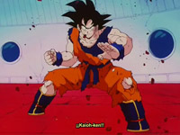
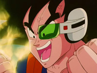
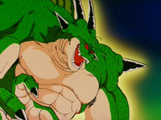

- Introducción a la saga de Freezer
- El viaje a Namek
- La búsqueda de las Dragon Ball de Namek
- Las Fuerzas Especiales de Freezer: La Brigada Especial Guiñú
- Goku se une a la batalla
- Freezer ataca: Las transformaciones
- Goku vs Freezer: Batalla por el destino del universo
Introducción a la saga de Freezer
Tras la lucha con Vegeta, Bulma y los demás deciden que deben hacer algo para intentar resucitar a
sus
amigos muertos en el combate. Krilín tiene una idea: Ir al planeta del que son originarios Kami-Sama
y
Piccolo e intentar reunir las Dragon Balls de allí, que seguramente serán más poderosas. Pero Bulma
dice
que tardarían demasiado tiempo en llegar con la nave más potente de La Tierra (unos 4179 años).
Entonces
Krilín le enseña el mando a distancia de la nave de Nappa, y se alegran porque con eso si podrán
llegar.
Gokuh es ingresado en un hospital con todos los huesos rotos. A los pocos días llega Bulma al
hospital y
les quiere enseñar el funcionamento de la nave de Nappa, pero por desgracia pulsa un botón
equivocado y
explota. Por suerte Mr. Popo les dice que sabe donde está la nave espacial en la que llegó Kami-Sama
a
La Tierra. En poco tiempo Bulma aprende a utilizarla y ya están listos para ir a Namek, el planeta
de
Kami-Sama y Piccolo. Sólo irán Bulma, Krilín y Son Gohan ya que Gokuh tiene que recuperarse.
El viaje a Namek
En sólo tres días parten para Namek, pero al mismo tiempo Vegeta llega al Planeta Freezer para ser
curado de sus heridas. En cuestión de pocas horas Vegeta se recupera y es informado de que su señor
Freezer, está muy enfadado con él por actúar por su cuenta y sin consultarle. También es informado
de
que Freezer se ha ido a Namek en busca de las Dragon Balls (el objetivo primordial de Vegeta) para
conseguir la vida eterna. Vegeta al oir ésto sale corriendo a Namek para evitar que Freezer las
encuentre ya que si no será su esclavo por toda la eternidad. Cuando ha pasado poco más de un mes
Gohan
y los demás llegan a Namek, pero nada más llegar ven como cae una nave del cielo. ¡¡¡Es la nave de
Vegeta!!! Aterrorizados empiezan a discutir si deben volver a La Tierra o quedarse.

Vegeta recuperandose
Las Fuerzas Especiales de Freezer: La Brigada Especial Guiñú
Freezer llama a la Brigada Especial Guiñú para que se encarguen de la situación. Esta Brigada está
compuesta por los soldados más fuertes de Freezer. Krilin lleva a Gohan a casa de Saichoro para que
le
aumente el poder. Vegeta los persigue, pero cuando los encuentra Gohan ya es más fuerte y todos
sienten
como se acerca La Brigada Especial. Vegeta corre a pedir los deseos (en Namek son tres) junto con
Krilín
y Gohan, pero La Brigada se interpone en su camino y les roba las Bolas. Empieza la lucha. Krilín y
Gohan se enfrentan a Gurdo, el más débil, pero posee poderes mentales que dejan paralizados a Krilín
y
Gohan. Vegeta se encarga de matarle. Luego luchan Vegeta y Likum. Vegeta demuestra su valentía pero
no
puede con Likum. Luego el soldado se encarga de Krilín y Gohan y les vence. Pero antes de que los
mate,
cae una cápsula del cielo. ¡¡¡¡Es Gokuh!!!!.

Fuerza ginyu

Goku entrenado
Gokuh se une a la batalla
Gokuh se dirige a la zona y les da a sus amigos y a Vegeta Habicuelas Mágicas para que se curen.
Luego
derrota a Likum de un golpe. Luego se enfrenta a Jis y Bata a la vez y éstos tampoco pueden con
Gokuh.
Vegeta tiembla al ver la fuerza de Gokuh y piensa que él puede ser el legendario Super-Saiyajin. Jis
huye en busca de Guiñú que está con Freezer. Freezer parte en busca de Saichoro para que le diga
como
funcionan las Bolas Mágicas. Guiñú y Jis esconden las Bolas y van a por Gokuh. Empieza una cruenta
lucha, pero Gokuh también es superior a Guiñú. Entonces éste se malhiere a sí mismo y le cambia el
cuerpo a Gokuh mediante una misteriosa técnica. Gohan y Krilín encuentran las Bolas en la nave de
Freezer e intentan pedir los deseos pero el Dragón no aparece. Vegeta también está por allí
observando
la situación. Jis y Guiñú vuelven y les atacan. Guiñú es incapaz de utilizar la fuerza de Gokuh
correctamente, pero Gohan y Krilín no quieren atacarle porque ven el cuerpo de Gokuh y no el de
Guiñú.
Gokuh llega y les explica la situación. Vegeta sale de su escondite y acaba con Jis. Guiñú quiere
cambiarle el cuerpo a Vegeta pero Gokuh se interpone y recupera su cuerpo. Guiñú lo vuelve a
intentar,
pero Gokuh lanza una rana entre el rayo y Vegeta y Guiñú queda convertido en una rana. Vegeta decide
ayudar a Gokuh, para así poder vencer a Freezer. Lo lleva a la sala de curación y les da ropas
nuevas a
Gohan y Krilín. Neil que está luchando con Freezer le cuenta que Dende ya ha ido a contarles el
secreto
de las Bolas Mágicas a los terrícolas. Freezer sale en busca de estos a toda velocidad. Dende llega
a la
nave de Freezer. Gohan y Krilín aprovechan que Vegeta duerme para pedir sus deseos. Primero
resucitan a
Piccolo y a Kami-Sama. Así reaparecen las Dragon Balls de la Tierra, luego transportan a Piccolo
desde
el planeta de Kaito (donde ha estado entrenando con Yamsha, Ten Shin Han y Chaoz) al planeta Namek.
En
el tercer deseo Saichoro muere y desaparece el Dragón.

Ginyu con el cuerpo de Goku

Porunga, el dragón sagrado de Namek
Freezer ataca: Las transformaciones
En ese momento llega Freezer y comienza la lucha. Vegeta le muestra su nueva fuerza y Freezer decide
transformarse y aumentar su fuerza. En poco tiempo derrota a Krilín y Gohan. Pero aparece Piccolo
que se
ha fusionado con Neil mediante una extraña técnica de los Namekianos. Piccolo es superior a Freezer
y le
da una lección, pero Freezer le dice que aún le quedan dos transformaciones posibles. Se transforma
por
segunda vez y vence a Piccolo, pero dice que le va a mostrar su verdadero rostro antes de matarle.
Dende
tiene poderes curativos y cura a Piccolo. Vegeta al ver ésto le pide a Krilín que le deje medio
muerto y
que luego le cure Dende. Así aumentará su fuerza y será capaz de vencer a Freezer. Dende se niega al
principio pero luego le cura. Freezer que se está transformando, ve esto y nada más terminar su
última
transformación mata a Dende. Luego Vegeta se enfrenta a él, pero es inútil, Freezer es demasiado
fuerte.

Piccolo contra freezer en 2ºforma

Vegeta llorando con prepotencia
Gokuh vs Freezer: Batalla por el destino del universo
En ese momento Gokuh termina su curación y aparece. Freezer mata a Vegeta. Gokuh promete vengarse de
Freezer.
Empieza una cruenta batalla muy igualada. Freezer le dice a Gokuh que sólo está utilizando la mitad
de su fuerza mientras que Gokuh está a su máximo nivel. Gokuh multiplica el Kaioh-ken (Golpe de
Kaito) por 20 para tomar la iniciativa pero no logra vencerle. Entonces decide formar una Genkidama
y la lanza contra Freezer. Cuando creen que Freezer ha muerto, el monstruo reaparece y mata a
Krilín. También deja malherido a Piccolo. Un repentino ataque de ira invade a Gokuh y se transorma
en el legendario Super-Saiyajin. Con esta extraordinaria fuerza Gokuh supera a Freezer, quien al
verse acorralado destruye el núcleo de Namek y dice que en cinco minutos el planeta estallará.
Además utiliza su fuerza al 100 por 100. Gokuh le supera de todos modos y decide dejar la lucha
porque Freezer está vencido y prefiere dejarle vivo y con el orgullo herido. Freezer le ataca con un
Kien-San teledirigido y Gokuh no tiene problemas para evitarlo. Entonces utiliza dos. Gokuh le
engaña y Freezer es cortado por la mitad por su propia técnica. Moribundo, Freezer le pide ayuda a
Gokuh. El buen corazón de Gokuh hace que le de un poco de su enegía para que pueda escapar de Namek
antes de que explote. Increiblemente Freezer utiliza esta energía para atacar a Gokuh, y Gokuh al
ver ésto decide rematarle definitivamente. Y así acaba con Freezer. Luego Gokuh intenta escapar de
Namek. Nadie sabe a ciencia cierta si lo ha conseguido.

Goku por primera vez en super saiyan

Goku vs Freezer

Goku devolviendo el ataque de freezer